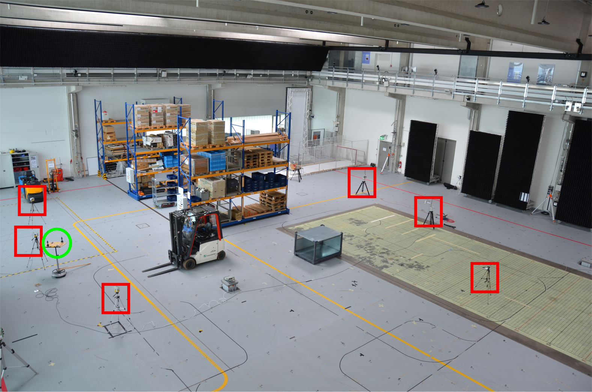
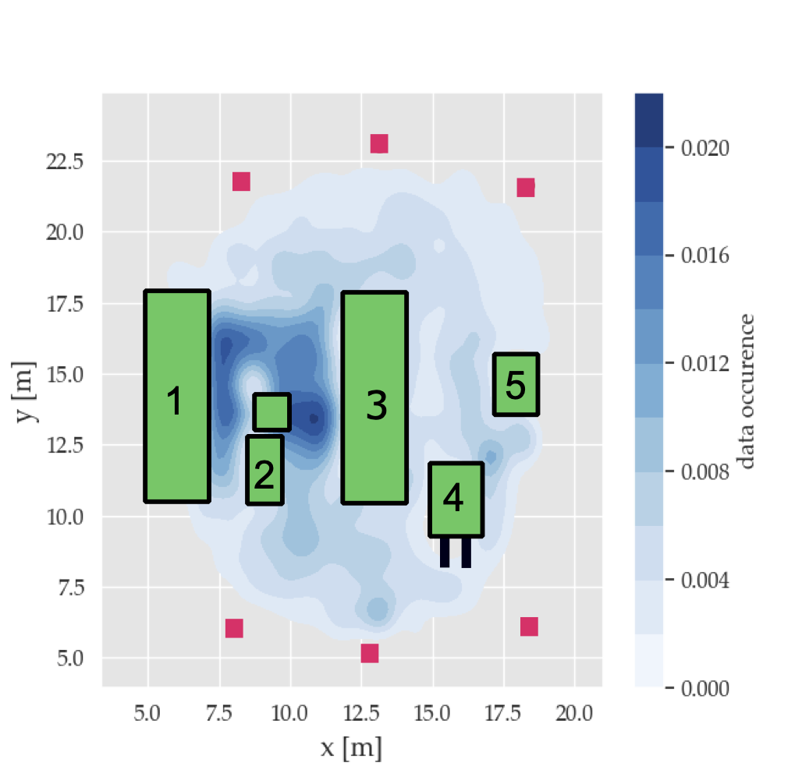

Introduction and Scope
Environments with complex radio-frequency (RF) propagation conditions such as indoor, urban or industrial environments have been a focus of the RF positioning community for a long time. Especially in industrial environments, the abundance of metal objects causing absorption, reflection, diffraction and scattering of the signals leads to highly complex signal propagation that is hard to model analytically. Therefore, classical RF positioning methods relying on angualation or lateration are hardly applicable. While received signal strength (RSS) based positioning exploiting the spatial significance of the propagation conditions has been used in these environments for many years, recently the use of Channel Impulse Responses (CIRs), containing information on the whole signal propation path, including Multipath Components have been proposed. While the specialized hardware and firmware components used to obtain these signals are not yet available in mass user products like smartphones, the introduction of Ultra-Wideband (UWB) technology into newer generations of devices means that CIR-based positioning is a promising possibility even for applications that require low-cost positioning.
Since CIRs contain a variety of spatial and environment-related information, they have been used for positioning in three different ways:
- Model Error Mitigation: The CIRs are used to classify propagation conditions like a missing line-of-sight (LOS) link or to estimate model errors caused by multipath components. The goal is to use CIRs to enhance classicial positioning methods.
- Fingerprinting: The CIRs are assumed to be spatially significant and the relation of the signal propagation to the environment is exploited for positioning by implicit modeling using a set of recorded training data.
- Multipath-SLAM: The CIRs are used to jointly estimate virtual anchors (i.e. characteristic reflection points) or other significant features and the user positions.
Since, in recent years, many research groups have been working on CIR-based positioning in adverse environments, a dataset to compare different approaches under a common evaluation framework is highly beneficial to the community. Hence, we introduce a robotic scenario dataset using the popular Decawave 1000 UWB chip. For this we reconstructed an industrial environment in a testing hall equipped with state-of-the-art positioning reference systems.
Environment and Setup
The environment resembles an industrial setting: it includes metal shelves, industrial vehicles and other objects that influence the radio signal propagation in the environment. The measurement setup is depicted in Figure 1: the stationary anchor nodes (highlighted with red boxes) are placed around the area and the mobile node (highlighted with a green circle) is attached to a wooden table to assure a constant height. The measurement setup was such that the mobile node was configured as a transmitter and the stationary anchor nodes were configured as receivers. We moved the wooden table throughout the environment at constant speed (at our best). Hence, the environment and data resembles a robotic scenario.

Figure 2 shows the distribution of the acquired data within the environment. The trajectories of the transmitter nodes are in-between the various objects; the size of the area is approximately 15m × 20m. In total, we captured about 300,000 channel impulse responses over a time period of approximately 1.5 hours. The sampling interval of the data was about 10 Hz. For clearance, a constant sampling interval is not available, as straightforward resampling of CIR data is not possible because of the complexity of the signals. Of these, a temporally coherent set of 230,000 CIRs is available for training purposes, while another coherent set of 70,000 datapoints is used for testing/evaluation. This corresponds to exactly 20 minutes of recording time.

Dataset Description
The dataset is provided as a pandas dataframe. The main file (i.e. the training data) contains the CIRs and reference positions. Each data instance (i.e. column of the dataframe) contains:
-
rec_time ([int]): the timestamp in μs at which the CIR was received at the receiver node.
-
burst_id ([int]): the transmitter time index. This can be used for synchronization. For clarity, at each of the burst IDs, the transmitter (i.e., the mobile node) transmits an impulse that is received by a subset of the receivers (i.e, anchors). The complete set of CIRs from all anchors is not available at all time steps (as at some receivers the detection was not successful due to an insufficient channel and/or data corruption).
-
cir_real (array[int]) and cir_imag (array[int]): the real and imaginary parts of the CIR as tuples. The CIRS are centered around the peaks and contain 366 samples each.
-
anch_ID ([string]): the anchor id of the receiving anchor.
-
The positions of the agent (i.e. the mobile tag, the transmitter) ref_x, ref_y as float. The reference positions are corresponding to the receiver timestamp rec_time.
An additional pandas dataframe containing the anchor/receiver positions is also available. It contains:
- anch_ID [string] the anchor IDs.
- p_x, p_y [float] positions of the anchors.
The training dataset is available here.
The height of the agent is fixed at 1.29m, while the positions of the anchors are as follows (anch_id: (x,y,z)):
- ’11:96:4D:56:02:D6′ : (8.027, 6.059, 1.277)
- ‘C5:95:4D:56:02:D6’: (12.791, 5.221, 1.273)
- ’79:95:4D:56:05:84′: (18.392, 6.132, 1.283)
- ‘A7:95:4D:56:08:81’: (8.216, 21.739, 1.271)
- ‘4C:95:4D:56:07:7C’: (13.141, 23.005, 1.251)
- ‘D5:95:4D:56:01:67’: (18.374, 21.629, 1.395)
Challenge Objectives
For the challenge, a second dataframe is provided that includes the same columns as the training dataset apart from the reference positions ref_x, ref_y. Using these data, the objective is to estimate position values at a regular time interval of 100 μs. The participants must provide a PANDAS dataframe of length 12,000 that includes:
-
the timestamps t_est [int] of the position estimates in μs (starting from 10,000).
-
the corresponding estimated positions x_est and y_est as float
For clarity, the input data are not available at a perfectly regular sampling interval and the complexity of CIRs does not allow for direct interpolation to obtain regularly spaced data, so, depending on the applied methods, resampling of the results might be necessary. This is to ensure a fair comparison of the methods. The resulting estimates will then be evaluated using the third quartile of the 2D Euclidean distance between the measurement points as score.
The test dataset is available here.